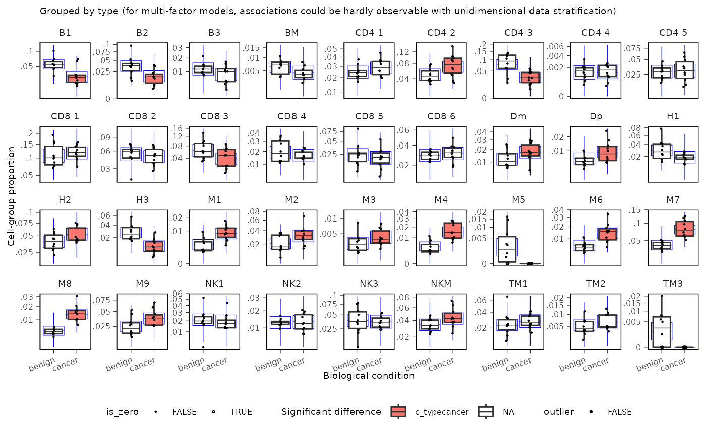

Creates a boxplot visualization of the model results from sccomp. This function plots the estimated cell proportions across samples, highlighting significant changes in cell composition according to a specified factor.
Usage
sccomp_boxplot(
.data,
factor,
significance_threshold = 0.05,
test_composition_above_logit_fold_change = attr(.data,
"test_composition_above_logit_fold_change"),
remove_unwanted_effects = FALSE
)Arguments
- .data
A tibble containing the results from
sccomp_estimateandsccomp_test, including the columns: cell_group name, sample name, read counts, factor(s), p-values, and significance indicators.- factor
A character string specifying the factor of interest included in the model for stratifying the boxplot.
- significance_threshold
A numeric value indicating the False Discovery Rate (FDR) threshold for labeling significant cell-groups. Defaults to 0.05.
- test_composition_above_logit_fold_change
A positive numeric value representing the effect size threshold used in the hypothesis test. A value of 0.2 corresponds to a change in cell proportion of approximately 10% for a cell type with a baseline proportion of 50% (e.g., from 45% to 55%). This threshold is consistent on the logit-unconstrained scale, even when the baseline proportion is close to 0 or 1.
- remove_unwanted_effects
A logical value indicating whether to remove unwanted variation from the data before plotting. Defaults to
FALSE.
Value
A ggplot object representing the boxplot of cell proportions across samples, stratified by the specified factor.
References
S. Mangiola, A.J. Roth-Schulze, M. Trussart, E. Zozaya-Valdés, M. Ma, Z. Gao, A.F. Rubin, T.P. Speed, H. Shim, & A.T. Papenfuss, sccomp: Robust differential composition and variability analysis for single-cell data, Proc. Natl. Acad. Sci. U.S.A. 120 (33) e2203828120, https://doi.org/10.1073/pnas.2203828120 (2023).
Examples
print("cmdstanr is needed to run this example.")
#> [1] "cmdstanr is needed to run this example."
# Note: Before running the example, ensure that the 'cmdstanr' package is installed:
# install.packages("cmdstanr", repos = c("https://stan-dev.r-universe.dev/", getOption("repos")))
# \donttest{
if (instantiate::stan_cmdstan_exists()) {
data("counts_obj")
estimate <- sccomp_estimate(
counts_obj,
formula_composition = ~ type,
formula_variability = ~ 1,
sample = "sample",
cell_group = "cell_group",
abundance = "count",
cores = 1
) |>
sccomp_test()
# Plot the boxplot of estimated cell proportions
sccomp_boxplot(
.data = estimate,
factor = "type",
significance_threshold = 0.05
)
}
#> sccomp says: count column is an integer. The sum-constrained beta binomial model will be used
#> sccomp says: estimation
#> sccomp says: the composition design matrix has columns: (Intercept), typecancer
#> sccomp says: the variability design matrix has columns: (Intercept)
#> Loading model from cache...
#> Path [1] :Initial log joint density = -481593.112467
#> Path [1] : Iter log prob ||dx|| ||grad|| alpha alpha0 # evals ELBO Best ELBO Notes
#> 56 -4.788e+05 1.465e-02 2.243e-01 1.000e+00 1.000e+00 3200 -3.705e+03 -3.701e+03
#> Path [1] :Best Iter: [56] ELBO (-3701.143295) evaluations: (3200)
#> Path [2] :Initial log joint density = -481670.303020
#> Path [2] : Iter log prob ||dx|| ||grad|| alpha alpha0 # evals ELBO Best ELBO Notes
#> 53 -4.788e+05 1.066e-02 2.504e-01 1.000e+00 1.000e+00 3003 -3.708e+03 -3.714e+03
#> Path [2] :Best Iter: [52] ELBO (-3708.492344) evaluations: (3003)
#> Path [3] :Initial log joint density = -481906.701290
#> Path [3] : Iter log prob ||dx|| ||grad|| alpha alpha0 # evals ELBO Best ELBO Notes
#> 59 -4.788e+05 8.589e-03 2.491e-01 9.703e-01 9.703e-01 3358 -3.699e+03 -3.709e+03
#> Path [3] :Best Iter: [58] ELBO (-3698.720758) evaluations: (3358)
#> Path [4] :Initial log joint density = -483628.136188
#> Path [4] : Iter log prob ||dx|| ||grad|| alpha alpha0 # evals ELBO Best ELBO Notes
#> 57 -4.788e+05 1.694e-02 2.179e-01 8.130e-01 8.130e-01 3295 -3.704e+03 -3.709e+03
#> Path [4] :Best Iter: [55] ELBO (-3703.578633) evaluations: (3295)
#> Path [5] :Initial log joint density = -481448.077945
#> Path [5] : Iter log prob ||dx|| ||grad|| alpha alpha0 # evals ELBO Best ELBO Notes
#> 53 -4.788e+05 9.229e-03 2.277e-01 1.000e+00 1.000e+00 2974 -3.706e+03 -3.712e+03
#> Path [5] :Best Iter: [50] ELBO (-3705.777396) evaluations: (2974)
#> Path [6] :Initial log joint density = -483968.465769
#> Path [6] : Iter log prob ||dx|| ||grad|| alpha alpha0 # evals ELBO Best ELBO Notes
#> 57 -4.788e+05 7.641e-03 1.796e-01 1.000e+00 1.000e+00 3314 -3.702e+03 -3.702e+03
#> Path [6] :Best Iter: [56] ELBO (-3701.951071) evaluations: (3314)
#> Path [7] :Initial log joint density = -481463.522092
#> Path [7] : Iter log prob ||dx|| ||grad|| alpha alpha0 # evals ELBO Best ELBO Notes
#> 53 -4.788e+05 8.534e-03 2.682e-01 5.009e-01 1.000e+00 3006 -3.708e+03 -3.723e+03
#> Path [7] :Best Iter: [52] ELBO (-3707.530052) evaluations: (3006)
#> Path [8] :Initial log joint density = -482365.717290
#> Path [8] : Iter log prob ||dx|| ||grad|| alpha alpha0 # evals ELBO Best ELBO Notes
#> 56 -4.788e+05 9.877e-03 3.387e-01 1.000e+00 1.000e+00 3158 -3.701e+03 -3.707e+03
#> Path [8] :Best Iter: [55] ELBO (-3701.408340) evaluations: (3158)
#> Path [9] :Initial log joint density = -481907.441159
#> Path [9] : Iter log prob ||dx|| ||grad|| alpha alpha0 # evals ELBO Best ELBO Notes
#> 58 -4.788e+05 1.358e-02 3.302e-01 1.000e+00 1.000e+00 3292 -3.700e+03 -3.707e+03
#> Path [9] :Best Iter: [57] ELBO (-3700.059080) evaluations: (3292)
#> Path [10] :Initial log joint density = -486165.475784
#> Path [10] : Iter log prob ||dx|| ||grad|| alpha alpha0 # evals ELBO Best ELBO Notes
#> 60 -4.788e+05 2.892e-03 2.744e-01 7.388e-01 7.388e-01 3670 -3.701e+03 -3.714e+03
#> Path [10] :Best Iter: [57] ELBO (-3701.428605) evaluations: (3670)
#> Path [11] :Initial log joint density = -481197.242823
#> Path [11] : Iter log prob ||dx|| ||grad|| alpha alpha0 # evals ELBO Best ELBO Notes
#> 54 -4.788e+05 1.198e-02 2.290e-01 1.000e+00 1.000e+00 2944 -3.709e+03 -3.714e+03
#> Path [11] :Best Iter: [52] ELBO (-3708.798050) evaluations: (2944)
#> Path [12] :Initial log joint density = -481585.347409
#> Path [12] : Iter log prob ||dx|| ||grad|| alpha alpha0 # evals ELBO Best ELBO Notes
#> 53 -4.788e+05 7.099e-03 3.002e-01 1.000e+00 1.000e+00 2942 -3.709e+03 -3.714e+03
#> Path [12] :Best Iter: [45] ELBO (-3709.494961) evaluations: (2942)
#> Path [13] :Initial log joint density = -481890.098066
#> Path [13] : Iter log prob ||dx|| ||grad|| alpha alpha0 # evals ELBO Best ELBO Notes
#> 55 -4.788e+05 9.194e-03 2.627e-01 1.000e+00 1.000e+00 3077 -3.710e+03 -3.709e+03
#> Path [13] :Best Iter: [55] ELBO (-3708.547186) evaluations: (3077)
#> Path [14] :Initial log joint density = -481257.796932
#> Path [14] : Iter log prob ||dx|| ||grad|| alpha alpha0 # evals ELBO Best ELBO Notes
#> 51 -4.788e+05 8.618e-03 2.533e-01 1.000e+00 1.000e+00 2704 -3.708e+03 -3.715e+03
#> Path [14] :Best Iter: [39] ELBO (-3708.439284) evaluations: (2704)
#> Path [15] :Initial log joint density = -482389.274556
#> Path [15] : Iter log prob ||dx|| ||grad|| alpha alpha0 # evals ELBO Best ELBO Notes
#> 56 -4.788e+05 4.977e-03 2.100e-01 1.000e+00 1.000e+00 3221 -3.708e+03 -3.704e+03
#> Path [15] :Best Iter: [56] ELBO (-3703.626802) evaluations: (3221)
#> Path [16] :Initial log joint density = -481985.000640
#> Path [16] : Iter log prob ||dx|| ||grad|| alpha alpha0 # evals ELBO Best ELBO Notes
#> 63 -4.788e+05 9.145e-03 2.217e-01 1.000e+00 1.000e+00 3780 -3.698e+03 -3.696e+03
#> Path [16] :Best Iter: [63] ELBO (-3696.053100) evaluations: (3780)
#> Path [17] :Initial log joint density = -481623.707504
#> Path [17] : Iter log prob ||dx|| ||grad|| alpha alpha0 # evals ELBO Best ELBO Notes
#> 55 -4.788e+05 8.937e-03 2.059e-01 1.000e+00 1.000e+00 3071 -3.705e+03 -3.702e+03
#> Path [17] :Best Iter: [55] ELBO (-3702.416843) evaluations: (3071)
#> Path [18] :Initial log joint density = -481455.685424
#> Path [18] : Iter log prob ||dx|| ||grad|| alpha alpha0 # evals ELBO Best ELBO Notes
#> 58 -4.788e+05 5.092e-03 1.802e-01 1.000e+00 1.000e+00 3220 -3.702e+03 -3.712e+03
#> Path [18] :Best Iter: [55] ELBO (-3701.838765) evaluations: (3220)
#> Path [19] :Initial log joint density = -481598.081334
#> Path [19] : Iter log prob ||dx|| ||grad|| alpha alpha0 # evals ELBO Best ELBO Notes
#> 60 -4.788e+05 7.002e-03 1.977e-01 8.730e-01 8.730e-01 3531 -3.699e+03 -3.714e+03
#> Path [19] :Best Iter: [58] ELBO (-3699.021513) evaluations: (3531)
#> Path [20] :Initial log joint density = -481903.643716
#> Path [20] : Iter log prob ||dx|| ||grad|| alpha alpha0 # evals ELBO Best ELBO Notes
#> 53 -4.788e+05 4.398e-03 2.093e-01 1.000e+00 1.000e+00 2910 -3.706e+03 -3.718e+03
#> Path [20] :Best Iter: [50] ELBO (-3706.271558) evaluations: (2910)
#> Path [21] :Initial log joint density = -485552.325282
#> Path [21] : Iter log prob ||dx|| ||grad|| alpha alpha0 # evals ELBO Best ELBO Notes
#> 60 -4.788e+05 2.524e-03 3.048e-01 5.485e-01 5.485e-01 3736 -3.702e+03 -3.716e+03
#> Path [21] :Best Iter: [58] ELBO (-3701.903400) evaluations: (3736)
#> Path [22] :Initial log joint density = -481527.869240
#> Path [22] : Iter log prob ||dx|| ||grad|| alpha alpha0 # evals ELBO Best ELBO Notes
#> 55 -4.788e+05 1.918e-02 3.045e-01 1.000e+00 1.000e+00 3139 -3.708e+03 -3.704e+03
#> Path [22] :Best Iter: [55] ELBO (-3704.427105) evaluations: (3139)
#> Path [23] :Initial log joint density = -481635.521591
#> Path [23] : Iter log prob ||dx|| ||grad|| alpha alpha0 # evals ELBO Best ELBO Notes
#> 53 -4.788e+05 1.209e-02 2.223e-01 1.000e+00 1.000e+00 2991 -3.709e+03 -3.714e+03
#> Path [23] :Best Iter: [39] ELBO (-3709.192346) evaluations: (2991)
#> Path [24] :Initial log joint density = -482573.861711
#> Path [24] : Iter log prob ||dx|| ||grad|| alpha alpha0 # evals ELBO Best ELBO Notes
#> 59 -4.788e+05 7.261e-03 2.054e-01 1.000e+00 1.000e+00 3469 -3.702e+03 -3.699e+03
#> Path [24] :Best Iter: [59] ELBO (-3699.317596) evaluations: (3469)
#> Path [25] :Initial log joint density = -482006.705668
#> Path [25] : Iter log prob ||dx|| ||grad|| alpha alpha0 # evals ELBO Best ELBO Notes
#> 52 -4.788e+05 7.967e-03 2.721e-01 1.000e+00 1.000e+00 2944 -3.710e+03 -3.714e+03
#> Path [25] :Best Iter: [43] ELBO (-3709.880279) evaluations: (2944)
#> Path [26] :Initial log joint density = -481590.125799
#> Path [26] : Iter log prob ||dx|| ||grad|| alpha alpha0 # evals ELBO Best ELBO Notes
#> 56 -4.788e+05 3.235e-03 2.608e-01 7.402e-01 7.402e-01 3091 -3.706e+03 -3.710e+03
#> Path [26] :Best Iter: [55] ELBO (-3705.601867) evaluations: (3091)
#> Path [27] :Initial log joint density = -481607.346272
#> Path [27] : Iter log prob ||dx|| ||grad|| alpha alpha0 # evals ELBO Best ELBO Notes
#> 59 -4.788e+05 2.779e-03 2.640e-01 6.674e-01 6.674e-01 3560 -3.699e+03 -3.708e+03
#> Path [27] :Best Iter: [57] ELBO (-3698.833657) evaluations: (3560)
#> Path [28] :Initial log joint density = -481677.667914
#> Path [28] : Iter log prob ||dx|| ||grad|| alpha alpha0 # evals ELBO Best ELBO Notes
#> 55 -4.788e+05 3.022e-03 2.915e-01 5.545e-01 5.545e-01 3055 -3.707e+03 -3.716e+03
#> Path [28] :Best Iter: [48] ELBO (-3706.775708) evaluations: (3055)
#> Path [29] :Initial log joint density = -481616.858795
#> Path [29] : Iter log prob ||dx|| ||grad|| alpha alpha0 # evals ELBO Best ELBO Notes
#> 61 -4.788e+05 9.414e-03 1.949e-01 1.000e+00 1.000e+00 3564 -3.699e+03 -3.702e+03
#> Path [29] :Best Iter: [59] ELBO (-3699.050151) evaluations: (3564)
#> Path [30] :Initial log joint density = -483060.996259
#> Path [30] : Iter log prob ||dx|| ||grad|| alpha alpha0 # evals ELBO Best ELBO Notes
#> 52 -4.788e+05 1.516e-02 4.132e-01 1.000e+00 1.000e+00 2826 -3.709e+03 -3.718e+03
#> Path [30] :Best Iter: [45] ELBO (-3709.446301) evaluations: (2826)
#> Path [31] :Initial log joint density = -481844.453975
#> Path [31] : Iter log prob ||dx|| ||grad|| alpha alpha0 # evals ELBO Best ELBO Notes
#> 55 -4.788e+05 6.356e-03 2.267e-01 1.000e+00 1.000e+00 3112 -3.709e+03 -3.703e+03
#> Path [31] :Best Iter: [55] ELBO (-3702.922743) evaluations: (3112)
#> Path [32] :Initial log joint density = -481779.135142
#> Path [32] : Iter log prob ||dx|| ||grad|| alpha alpha0 # evals ELBO Best ELBO Notes
#> 57 -4.788e+05 2.812e-03 3.364e-01 5.578e-01 5.578e-01 3395 -3.701e+03 -3.714e+03
#> Path [32] :Best Iter: [55] ELBO (-3701.096905) evaluations: (3395)
#> Path [33] :Initial log joint density = -481640.221820
#> Path [33] : Iter log prob ||dx|| ||grad|| alpha alpha0 # evals ELBO Best ELBO Notes
#> 55 -4.788e+05 4.221e-03 1.819e-01 8.432e-01 8.432e-01 3120 -3.708e+03 -3.712e+03
#> Path [33] :Best Iter: [44] ELBO (-3707.755699) evaluations: (3120)
#> Path [34] :Initial log joint density = -481608.328902
#> Path [34] : Iter log prob ||dx|| ||grad|| alpha alpha0 # evals ELBO Best ELBO Notes
#> 53 -4.788e+05 2.609e-03 2.662e-01 5.933e-01 5.933e-01 2863 -3.709e+03 -3.715e+03
#> Path [34] :Best Iter: [45] ELBO (-3709.431751) evaluations: (2863)
#> Path [35] :Initial log joint density = -483249.245109
#> Path [35] : Iter log prob ||dx|| ||grad|| alpha alpha0 # evals ELBO Best ELBO Notes
#> 55 -4.788e+05 6.684e-03 3.133e-01 4.663e-01 1.000e+00 3126 -3.708e+03 -3.710e+03
#> Path [35] :Best Iter: [46] ELBO (-3708.243988) evaluations: (3126)
#> Path [36] :Initial log joint density = -481782.957723
#> Path [36] : Iter log prob ||dx|| ||grad|| alpha alpha0 # evals ELBO Best ELBO Notes
#> 52 -4.788e+05 6.522e-03 2.869e-01 8.013e-01 8.013e-01 2923 -3.707e+03 -3.723e+03
#> Path [36] :Best Iter: [50] ELBO (-3706.663945) evaluations: (2923)
#> Path [37] :Initial log joint density = -481727.747785
#> Path [37] : Iter log prob ||dx|| ||grad|| alpha alpha0 # evals ELBO Best ELBO Notes
#> 54 -4.788e+05 5.778e-03 2.074e-01 1.000e+00 1.000e+00 3038 -3.709e+03 -3.710e+03
#> Path [37] :Best Iter: [39] ELBO (-3709.230919) evaluations: (3038)
#> Path [38] :Initial log joint density = -482464.239842
#> Path [38] : Iter log prob ||dx|| ||grad|| alpha alpha0 # evals ELBO Best ELBO Notes
#> 56 -4.788e+05 6.383e-03 2.782e-01 1.000e+00 1.000e+00 3254 -3.709e+03 -3.709e+03
#> Path [38] :Best Iter: [56] ELBO (-3708.595914) evaluations: (3254)
#> Path [39] :Initial log joint density = -482847.566976
#> Path [39] : Iter log prob ||dx|| ||grad|| alpha alpha0 # evals ELBO Best ELBO Notes
#> 56 -4.788e+05 8.248e-03 2.506e-01 9.068e-01 9.068e-01 3347 -3.701e+03 -3.711e+03
#> Path [39] :Best Iter: [55] ELBO (-3700.917174) evaluations: (3347)
#> Path [40] :Initial log joint density = -481631.880975
#> Path [40] : Iter log prob ||dx|| ||grad|| alpha alpha0 # evals ELBO Best ELBO Notes
#> 54 -4.788e+05 3.851e-03 3.144e-01 6.979e-01 6.979e-01 3147 -3.707e+03 -3.721e+03
#> Path [40] :Best Iter: [42] ELBO (-3707.415878) evaluations: (3147)
#> Path [41] :Initial log joint density = -481576.006621
#> Path [41] : Iter log prob ||dx|| ||grad|| alpha alpha0 # evals ELBO Best ELBO Notes
#> 58 -4.788e+05 1.849e-02 2.533e-01 1.000e+00 1.000e+00 3481 -3.697e+03 -3.703e+03
#> Path [41] :Best Iter: [56] ELBO (-3696.595810) evaluations: (3481)
#> Path [42] :Initial log joint density = -482023.356144
#> Path [42] : Iter log prob ||dx|| ||grad|| alpha alpha0 # evals ELBO Best ELBO Notes
#> 58 -4.788e+05 5.056e-03 2.242e-01 7.769e-01 7.769e-01 3317 -3.703e+03 -3.715e+03
#> Path [42] :Best Iter: [56] ELBO (-3703.263518) evaluations: (3317)
#> Path [43] :Initial log joint density = -481463.915555
#> Path [43] : Iter log prob ||dx|| ||grad|| alpha alpha0 # evals ELBO Best ELBO Notes
#> 50 -4.788e+05 5.839e-03 2.726e-01 8.595e-01 8.595e-01 2713 -3.706e+03 -3.718e+03
#> Path [43] :Best Iter: [48] ELBO (-3706.174395) evaluations: (2713)
#> Path [44] :Initial log joint density = -481960.631122
#> Path [44] : Iter log prob ||dx|| ||grad|| alpha alpha0 # evals ELBO Best ELBO Notes
#> 53 -4.788e+05 1.090e-02 2.546e-01 1.000e+00 1.000e+00 2908 -3.711e+03 -3.716e+03
#> Path [44] :Best Iter: [43] ELBO (-3710.730087) evaluations: (2908)
#> Path [45] :Initial log joint density = -481641.132415
#> Path [45] : Iter log prob ||dx|| ||grad|| alpha alpha0 # evals ELBO Best ELBO Notes
#> 60 -4.788e+05 1.993e-02 3.295e-01 4.621e-01 1.000e+00 3468 -3.699e+03 -3.705e+03
#> Path [45] :Best Iter: [59] ELBO (-3698.804534) evaluations: (3468)
#> Path [46] :Initial log joint density = -481747.665598
#> Path [46] : Iter log prob ||dx|| ||grad|| alpha alpha0 # evals ELBO Best ELBO Notes
#> 55 -4.788e+05 9.453e-03 2.722e-01 1.000e+00 1.000e+00 2971 -3.703e+03 -3.705e+03
#> Path [46] :Best Iter: [54] ELBO (-3703.215758) evaluations: (2971)
#> Path [47] :Initial log joint density = -481786.411063
#> Path [47] : Iter log prob ||dx|| ||grad|| alpha alpha0 # evals ELBO Best ELBO Notes
#> 56 -4.788e+05 8.965e-03 2.890e-01 1.000e+00 1.000e+00 3157 -3.703e+03 -3.709e+03
#> Path [47] :Best Iter: [55] ELBO (-3703.294561) evaluations: (3157)
#> Path [48] :Initial log joint density = -481544.947120
#> Path [48] : Iter log prob ||dx|| ||grad|| alpha alpha0 # evals ELBO Best ELBO Notes
#> 55 -4.788e+05 3.801e-03 1.938e-01 8.412e-01 8.412e-01 3131 -3.708e+03 -3.706e+03
#> Path [48] :Best Iter: [55] ELBO (-3706.200379) evaluations: (3131)
#> Path [49] :Initial log joint density = -483370.355694
#> Path [49] : Iter log prob ||dx|| ||grad|| alpha alpha0 # evals ELBO Best ELBO Notes
#> 61 -4.788e+05 2.731e-03 3.040e-01 5.707e-01 5.707e-01 3657 -3.701e+03 -3.711e+03
#> Path [49] :Best Iter: [59] ELBO (-3700.585585) evaluations: (3657)
#> Path [50] :Initial log joint density = -482987.584645
#> Path [50] : Iter log prob ||dx|| ||grad|| alpha alpha0 # evals ELBO Best ELBO Notes
#> 59 -4.788e+05 6.350e-03 2.093e-01 1.000e+00 1.000e+00 3418 -3.705e+03 -3.707e+03
#> Path [50] :Best Iter: [56] ELBO (-3704.539424) evaluations: (3418)
#> Finished in 13.4 seconds.
#> sccomp says: to do hypothesis testing run `sccomp_test()`,
#> the `test_composition_above_logit_fold_change` = 0.1 equates to a change of ~10%, and
#> 0.7 equates to ~100% increase, if the baseline is ~0.1 proportion.
#> Use `sccomp_proportional_fold_change` to convert c_effect (linear) to proportion difference (non-linear).
#> sccomp says: auto-cleanup removed 1 draw files from 'sccomp_draws_files'
#> Joining with `by = join_by(cell_group)`
#> sccomp says: When visualising proportions, especially for complex models, consider setting `remove_unwanted_effects=TRUE`. This will adjust the proportions, preserving only the observed effect.
#> Precompiled model not found. Compiling the model...
#> Running make /tmp/Rtmpp97UFr/model-5a7132a3163f "STAN_THREADS=TRUE" \
#> "STANCFLAGS += --include-paths=/tmp/Rtmpp97UFr/temp_libpath5a717fb8b38a/sccomp/stan --name='glm_multi_beta_binomial_generate_data_model'"
#>
#> --- Translating Stan model to C++ code ---
#> bin/stanc --include-paths=/tmp/Rtmpp97UFr/temp_libpath5a717fb8b38a/sccomp/stan --name='glm_multi_beta_binomial_generate_data_model' --o=/tmp/Rtmpp97UFr/model-5a7132a3163f.hpp /tmp/Rtmpp97UFr/model-5a7132a3163f.stan
#>
#> --- Compiling C++ code ---
#> g++ -Wno-deprecated-declarations -std=c++17 -pthread -D_REENTRANT -Wno-sign-compare -Wno-ignored-attributes -Wno-class-memaccess -DSTAN_THREADS -I stan/lib/stan_math/lib/tbb_2020.3/include -O3 -I src -I stan/src -I stan/lib/rapidjson_1.1.0/ -I lib/CLI11-1.9.1/ -I stan/lib/stan_math/ -I stan/lib/stan_math/lib/eigen_3.4.0 -I stan/lib/stan_math/lib/boost_1.87.0 -I stan/lib/stan_math/lib/sundials_6.1.1/include -I stan/lib/stan_math/lib/sundials_6.1.1/src/sundials -DBOOST_DISABLE_ASSERTS -c -Wno-ignored-attributes -x c++ -o /tmp/Rtmpp97UFr/model-5a7132a3163f.o /tmp/Rtmpp97UFr/model-5a7132a3163f.hpp
#>
#> --- Linking model ---
#> g++ -Wno-deprecated-declarations -std=c++17 -pthread -D_REENTRANT -Wno-sign-compare -Wno-ignored-attributes -Wno-class-memaccess -DSTAN_THREADS -I stan/lib/stan_math/lib/tbb_2020.3/include -O3 -I src -I stan/src -I stan/lib/rapidjson_1.1.0/ -I lib/CLI11-1.9.1/ -I stan/lib/stan_math/ -I stan/lib/stan_math/lib/eigen_3.4.0 -I stan/lib/stan_math/lib/boost_1.87.0 -I stan/lib/stan_math/lib/sundials_6.1.1/include -I stan/lib/stan_math/lib/sundials_6.1.1/src/sundials -DBOOST_DISABLE_ASSERTS -Wl,-L,"/home/runner/.cmdstan/cmdstan-2.37.0/stan/lib/stan_math/lib/tbb" -Wl,-rpath,"/home/runner/.cmdstan/cmdstan-2.37.0/stan/lib/stan_math/lib/tbb" /tmp/Rtmpp97UFr/model-5a7132a3163f.o src/cmdstan/main_threads.o -ltbb stan/lib/stan_math/lib/sundials_6.1.1/lib/libsundials_nvecserial.a stan/lib/stan_math/lib/sundials_6.1.1/lib/libsundials_cvodes.a stan/lib/stan_math/lib/sundials_6.1.1/lib/libsundials_idas.a stan/lib/stan_math/lib/sundials_6.1.1/lib/libsundials_kinsol.a stan/lib/stan_math/lib/tbb/libtbb.so.2 -o /tmp/Rtmpp97UFr/model-5a7132a3163f
#> rm /tmp/Rtmpp97UFr/model-5a7132a3163f.hpp /tmp/Rtmpp97UFr/model-5a7132a3163f.o
#> Model compiled and saved to cache successfully.
#> Running standalone generated quantities after 1 MCMC chain, with 1 thread(s) per chain...
#>
#> Chain 1 finished in 0.0 seconds.
#> Joining with `by = join_by(cell_group, sample)`
#> Joining with `by = join_by(cell_group, type)`

# }